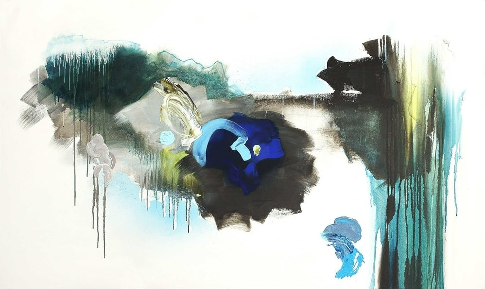

Sylvie Adams
| sylvieadams.com • info@sylvieadams.com
Sylvie Adams est une artiste canadienne vivant et travaillant à Montréal. Elle est titulaire d’un baccalauréat en beaux-arts de l’Université Concordia. Ses œuvres ont fait l’objet de nombreuses expositions individuelles et de groupe et elle a participé à maintes foires internationales d’art contemporain prestigieuses (entre autres Scope, Contexte et ArtNew-York) – aux États-Unis, en Europe et en Asie.
Sélectionnée par la commissaire et directrice du Art Wynwood pour participer à une exposition en l’honneur de Shepard Fairey (aussi connu sous le nom d'Obey Giant et auteur de l’affiche « Hope » d’Obama) à Miami, son travail a aussi été remarqué par les journalistes et critiques du Blouin Art Info et Artnet News, lors d’expositions à New-York.
Ses œuvres font également partie de collections privées et corporatives, dont les collections de Rio Tinto Alcan et Norwegian Cruise Line.